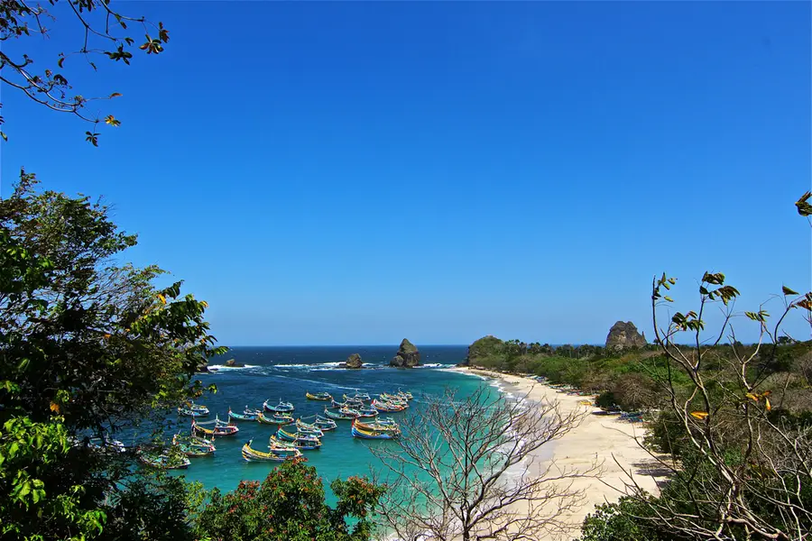
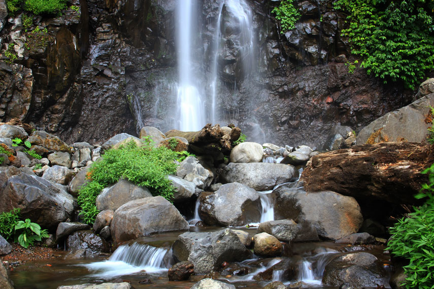
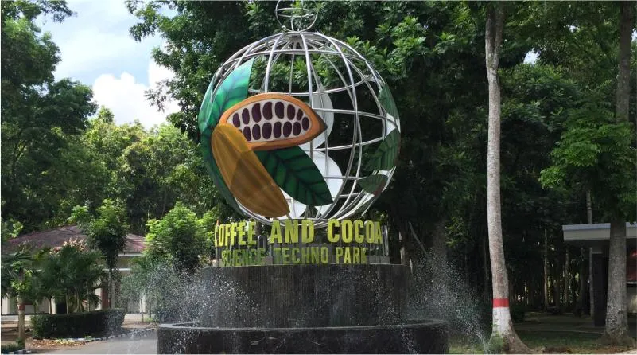

Pantai Papuma

Pantai papuma berada di Desa Lojejer, Kecamatan Wuluhan, Kabupaten Jember. Keindahan pasir putih Malikan ini cukup eksotis dan mampu menarik perhatian wisatawan lokal hingga mancanegara untuk datang kesana.
Gunung Gambir

Gunung Gambir adalah sebuah kebun teh yang berada di Jember, tepatnya berada di lereng Gunung Argopuro. Selain meneikmati panorama alam, pengunjung juga dapat mengenal proses budidaya tanaman teh.
Air Terjun Tancak

Air Terjun Tancak adalah air terjun tertinggi di Kabupaten Jember dengan ketinggian 82 meter. Berada di ketinggian 900 mdpl pada lereng Pegunungan Argopuro, destinasi ini memadukan megahnya tebing batu, derasnya debit air, dan hamparan kebun kopi yang asri dalam satu petualangan alam yang autentik.
Pusat Penelitian Kopi dan Kakao

Puslitkoka Jember adalah pusat riset nasional sekaligus tempat wisata edukasi kopi dan cokelat. Tempat ini berfungsi untuk menciptakan bibit unggul, menguji mutu ekspor, dan membuat mesin pengolahan, sekaligus membuka area perkebunan agar masyarakat bisa belajar budidaya, melihat pabrik cokelat, dan membeli produk olahan asli.